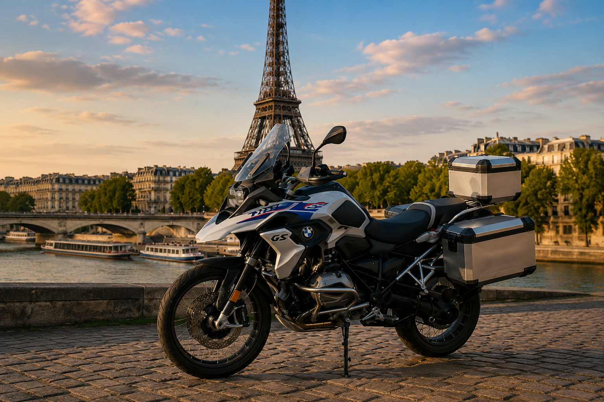

Large choix au Royaume-Uni
Découvrez sur une seule plateforme des motos proposées par des professionnels et des particuliers britanniques.
Que vous recherchiez une BMW, Honda, Yamaha, Kawasaki, KTM, Ducati, Triumph ou Suzuki, AnyBike peut trouver la bonne moto au Royaume-Uni et organiser sa remise à votre transporteur pour la France.

AnyBike met en relation les acheteurs en France avec des motos proposées par des professionnels et des vendeurs particuliers dans tout le Royaume-Uni, depuis la première demande jusqu’à la remise convenue au transporteur.
Découvrez sur une seule plateforme des motos proposées par des professionnels et des particuliers britanniques.
Indiquez-nous la marque, le modèle, l’année, le kilométrage, la couleur, le budget et les options souhaitées.
AnyBike recherche également des motos adaptées en dehors du stock actuellement publié.
Demandez des photos, vidéos, vérifications du vendeur et, lorsqu’elles sont disponibles, des inspections indépendantes.
Les documents disponibles et la préparation convenue au Royaume-Uni sont confirmés avant l’achat.
La moto peut être remise à votre transporteur, entrepôt ou partenaire logistique désigné.
Expliquez précisément à AnyBike ce que vous recherchez. Nous étudions le marché britannique et vous aidons à trouver une moto adaptée pour son transport vers la France.
Découvrez les principales marques et ouvrez le stock AnyBike actuellement disponible, automatiquement filtré selon la marque choisie.
AnyBike peut rechercher des BMW GS, RT, R nineT, S 1000 RR et d’autres motos BMW auprès de professionnels et de particuliers britanniques.
Voir les motos BMW →Trouvez des Yamaha YZF-R1, MT, Ténéré, Tracer et d’autres modèles auprès de vendeurs dans tout le Royaume-Uni.
Voir les motos Yamaha →Recherchez des Honda Africa Twin, Fireblade, Gold Wing, CB et d’autres motos Honda sur le marché britannique.
Voir les motos Honda →Découvrez les Triumph Tiger, Street Triple, Speed Triple, Bonneville et d’autres modèles britanniques.
Voir les motos Triumph →Parcourez les Kawasaki Ninja, les modèles Z, Versys et d’autres motos proposées par des professionnels et particuliers britanniques.
Voir les motos Kawasaki →AnyBike peut rechercher des Suzuki Hayabusa, V-Strom, GSX-R et d’autres motos Suzuki au Royaume-Uni.
Voir les motos Suzuki →Trouvez des Ducati Multistrada, Panigale, Monster, Diavel et d’autres motos Ducati au Royaume-Uni.
Voir les motos Ducati →Recherchez des KTM Adventure, Super Duke, Enduro et d’autres modèles performants auprès de vendeurs britanniques.
Voir les motos KTM →Ouvrez le stock disponible de la marque concernée ou envoyez une demande en précisant le modèle, l’année, le kilométrage, la couleur et les options souhaitées.
AnyBike recherche au Royaume-Uni des Yamaha YZF-R1 correspondant à l’année, la couleur, le kilométrage et les équipements souhaités.
Voir les Yamaha YZF-R1 →Trouvez des Yamaha MT-09 et MT-09 SP auprès de professionnels et particuliers britanniques, selon la couleur et l’année recherchées.
Voir les Yamaha MT-09 →Recherchez des Yamaha Ténéré 700 au Royaume-Uni, y compris les versions Standard, Rally et les modèles Adventure mieux équipés.
Voir les Yamaha Ténéré 700 →AnyBike peut rechercher des BMW R 1300 GS Standard, Adventure, Triple Black ou Option 719 sur le marché britannique.
Voir les BMW R 1300 GS →Trouvez des Honda Africa Twin à boîte manuelle, DCT ou en version Adventure Sports auprès de vendeurs britanniques.
Voir les Honda Africa Twin →AnyBike recherche des Honda Fireblade selon la génération, la couleur, le kilométrage et les équipements souhaités.
Voir les Honda Fireblade →Trouvez des Triumph Tiger 900 GT, Rally et Pro auprès de professionnels et particuliers britanniques.
Voir les Triumph Tiger 900 →Indiquez l’année, la couleur, le kilométrage et les équipements souhaités pour votre Kawasaki Ninja ZX-10R au Royaume-Uni.
Voir les Kawasaki Ninja ZX-10R →Recherchez des Suzuki Hayabusa anciennes ou récentes auprès de professionnels et particuliers au Royaume-Uni.
Voir les Suzuki Hayabusa →Trouvez des Ducati Multistrada V4, V4 S et Rally sur le marché britannique.
Voir les Ducati Multistrada V4 →Confiez à AnyBike la recherche d’une KTM 1290 Super Adventure, y compris les versions S et R.
Voir les KTM 1290 Super Adventure →Indiquez à AnyBike la marque, le modèle, l’année, le kilométrage, la couleur, le budget et les équipements souhaités.
Faire rechercher une autre moto →Les motos récemment ajoutées sont chargées directement depuis le stock AnyBike. Ouvrez une annonce pour consulter les informations complètes et envoyer une demande.
AnyBike vend et recherche des motos. Les acheteurs peuvent choisir leur propre transporteur ou convenir d’une remise adaptée au Royaume-Uni. Les droits, taxes, formalités d’importation, conformité technique et immatriculation doivent être vérifiés pour chaque moto avant l’achat.
Pour Paris et sa région, la moto peut être remise à un transporteur routier ou à un opérateur de groupage choisi par l’acheteur.
Les liaisons transmanche et les transporteurs routiers desservant Calais et Dunkerque peuvent offrir des solutions pratiques depuis le Royaume-Uni.
Le Havre, Caen, Cherbourg et les axes normands peuvent convenir aux acheteurs organisant une traversée maritime ou un transport routier.
Pour l’est de la France, AnyBike peut coordonner la remise au transporteur britannique désigné pour une livraison routière ou groupée.
Les acheteurs de l’ouest peuvent organiser une livraison vers un dépôt, un professionnel ou une adresse convenue avec leur transporteur.
Pour Lyon, Marseille, Toulouse, Nice et les régions du sud, précisez à AnyBike votre destination, votre transporteur et les documents requis.
Oui. Consultez le stock disponible ou envoyez à AnyBike une demande de recherche indiquant la marque, le modèle, l’année, le kilométrage, la couleur et les options souhaitées.
Oui. AnyBike peut rechercher auprès de professionnels, de particuliers et de partenaires britanniques des motos qui ne figurent pas encore dans le stock public.
Oui. Les professionnels peuvent discuter d’achats unitaires, de recherches régulières, de stock marchand ou de lots plus importants.
Les possibilités dépendent de la moto et du vendeur. Demandez à AnyBike les photos, vidéos, vérifications ou inspections indépendantes disponibles.
Oui. La moto peut être remise à un transporteur, un entrepôt, un dépôt ou un partenaire logistique convenu.
Oui. Vous pouvez désigner votre transporteur préféré et AnyBike coordonnera la remise de la moto au Royaume-Uni.
Oui. Des droits, la TVA à l’importation et d’autres frais peuvent s’appliquer selon la moto et l’opération. Vérifiez-les avant l’achat avec la douane française ou votre représentant en douane.
Non, l’immatriculation française ne peut pas être garantie pour chaque moto. Vérifiez avant l’achat l’identification, la conformité, les éventuelles modifications, le certificat de conformité et les exigences de l’ANTS ou d’un professionnel compétent.
Les documents disponibles varient selon la moto. AnyBike confirme avant la vente les éléments disponibles, notamment la V5C, la facture, l’historique d’entretien, les clés et les autres pièces du véhicule.
Consultez le stock disponible et envoyez une demande sur la moto qui vous intéresse. Si le modèle recherché n’est pas publié, utilisez le service de recherche personnalisée.
Découvrez les motos actuellement disponibles ou indiquez précisément à AnyBike ce que vous recherchez, d’une moto individuelle à un lot professionnel.